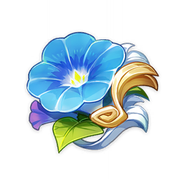
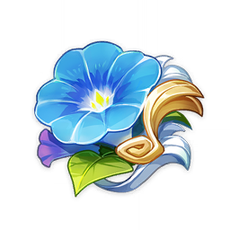
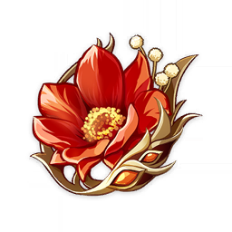
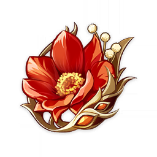

 

Gladiator's Finale | Wonderer's Troupe | Thundersoother | Thunderinf Fury | Maiden Beloved | Viridescent Venerer | Crimson Witch | Lavawalker

Noblesse Oblige | Bloodstained Chivalry | Archaic Petra | Retracing Bolide | Blizzard Strayer | Heart of Depth | Tenacity of the Milelith | Pale Flame


Shimenawa Reminiscense | Emblem of Severed Fate | Husk of Opulent Dreams | Ocean-Hued Clam